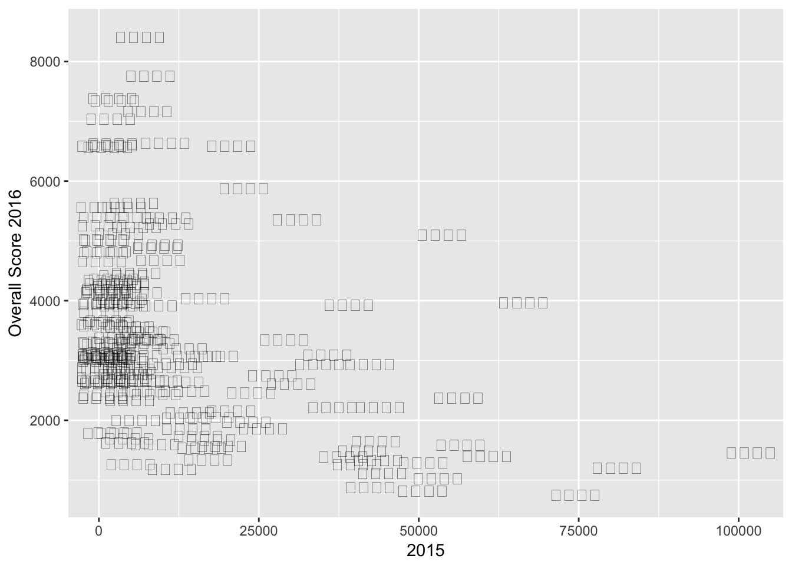
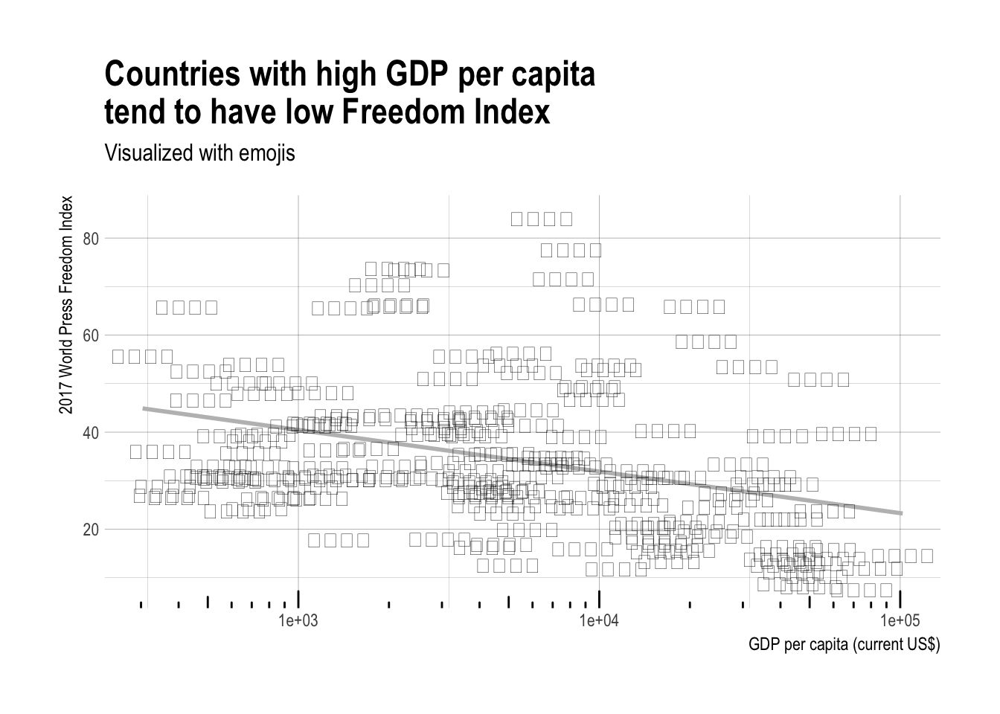

With Reporters Without Borders coming out with its 2017 World Press Freedom Index in the same week as Hadley Wickham comming out with the emo(ji) package, I had no choice but to explore both of them at the same time.
Disclamer! This post is not an exercise in statistical inference but rather a proof of concept of how to use the emo(ji) package with ggplot2.
Loading packages
library(hrbrthemes)
library(tidyverse)## Warning: Installed Rcpp (0.12.12) different from Rcpp used to build dplyr (0.12.11).
## Please reinstall dplyr to avoid random crashes or undefined behavior.## Warning: package 'dplyr' was built under R version 3.4.1library(stringr)
library(tibble)
library(emo)The hrbrthemes is not necessary for this project but it is one of my personal favorite ggplot2 themes.
Gathering data
Here we collect the data from Reporters Without Borders, emoji flags and The World Bank (so we have something to plot against).
2017 World Press Freedom Index
We have the 2017 World Press Freedom Index (direct download link) data which we load in as normal.
(freedom_index <- read_csv("https://rsf.org/sites/default/files/index_format_upload_2017-v2_1_0.csv"))## # A tibble: 180 x 12
## ISO Rank FR_Country EN_country ES_country
## <chr> <int> <chr> <chr> <chr>
## 1 NOR 1 Norvège Norway Noruega
## 2 SWE 2 Suede Sweden Suecia
## 3 FIN 3 Finlande Finland Finlandia
## 4 DNK 4 Danemark Denmark Dinamarca
## 5 NLD 5 Pays-Bas Netherlands Países Bajos
## 6 CRI 6 Costa Rica Costa Rica Costa Rica
## 7 CHE 7 Suisse Switzerland Suiza
## 8 JAM 8 Jamaïque Jamaica Jamaica
## 9 BEL 9 Belgique Belgium Bélgica
## 10 ISL 10 Islande Iceland Islandia
## # ... with 170 more rows, and 7 more variables: `Underlying situation
## # score 2016` <dbl>, `Abuse score 2016` <chr>, `Overall Score
## # 2016` <dbl>, `Progression RANK` <int>, `Rank 2015` <int>, `Score
## # 2015` <dbl>, Zone <chr>and we see that a total of 180 countries have a score (Overall Score 2016).
GDP per capita
To have something somehow meaningful to compare the freedom index to. I’ve found some data about GDP per capita, mostly because I figured it would have data for quite a lot of the contries covered by the freedom index. So from The World Bank (direct download link) which we load in as normal.
(gdp_pcap <- read_csv("API_NY.GDP.PCAP.CD_DS2_en_csv_v2.csv", skip = 4))which have quite a few variables but for now we will just focus on the 2015 variable as the 2016 appears empty. Now that we have two datasets which we would like to combine, a general question would be if the gdp_pcap data have information matching our 180 countries. So with the following bit of code we join the two datasets together by the ICO ALPHA-3 Code avaliable in both datasets and select the countries who don’t have a value for the year 2015.
left_join(freedom_index, gdp_pcap, by = c("ISO" = "Country Code")) %>%
filter(is.na(`2015`)) %>%
select(EN_country)## # A tibble: 12 x 1
## EN_country
## <chr>
## 1 Liechtenstein
## 2 Andorra
## 3 OECS
## 4 Taiwan
## 5 Papua New Guinea
## 6 Cyprus North
## 7 Kosovo
## 8 Venezuela
## 9 Libya
## 10 Syrian Arab Republic
## 11 Eritrea
## 12 Democratic People's Republic of Koreawhich leaves us with 166 countries. I could have looked for the data for these countries, but that is outside the reach for this post.
Flag emoji
I would like to use the different flag emojis
## 🗾🎌🇦🇫🇦🇽🇦🇱🇩🇿🇦🇸🇦🇩🇦🇴🇦🇮🇦🇶🇦🇬🇦🇷🇦🇲🇦🇼🇦🇺🇦🇹🇦🇿🇧🇸🇧🇭🇧🇩🇧🇧🇧🇾🇧🇪🇧🇿🇧🇯🇧🇲🇧🇹🇧🇴🇧🇶🇧🇦🇧🇼🇧🇷🇮🇴🇻🇬🇧🇳🇧🇬🇧🇫🇧🇮🇨🇻🇰🇭🇨🇲🇨🇦🇮🇨🇰🇾🇨🇫🇹🇩🇨🇱🇨🇳🇨🇽🇨🇨🇨🇴🇰🇲🇨🇬🇨🇩🇨🇰🇨🇷🇭🇷🇨🇺🇨🇼🇨🇾🇨🇿🇩🇰🇩🇯🇩🇲🇩🇴🇪🇨🇪🇬🇸🇻🇬🇶🇪🇷🇪🇪🇪🇹🇫🇰🇫🇴🇫🇯🇫🇮🇫🇷🇬🇫🇵🇫🇹🇫🇬🇦🇬🇲🇬🇪🇩🇪🇬🇭🇬🇮🇬🇷🇬🇱🇬🇩🇬🇵🇬🇺🇬🇹🇬🇬🇬🇳🇬🇼🇬🇾🇭🇹🇭🇳🇭🇰🇭🇺🇮🇸🇮🇳🇮🇩🇮🇷🇮🇶🇮🇪🇮🇲🇮🇱🇮🇹🇨🇮🇯🇲🇯🇵🇯🇪🇯🇴🇰🇿🇰🇪🇰🇮🇽🇰🇰🇼🇰🇬🇱🇦🇱🇻🇱🇧🇱🇸🇱🇷🇱🇾🇱🇮🇱🇹🇱🇺🇲🇴🇲🇰🇲🇬🇲🇼🇲🇾🇲🇻🇲🇱🇲🇹🇲🇭🇲🇶🇲🇷🇲🇺🇾🇹🇲🇽🇫🇲🇲🇩🇲🇨🇲🇳🇲🇪🇲🇸🇲🇦🇲🇿🇲🇲🇳🇦🇳🇷🇳🇵🇳🇱🇳🇨🇳🇿🇳🇮🇳🇪🇳🇬🇳🇺🇳🇫🇲🇵🇰🇵🇳🇴🇴🇲🇵🇰🇵🇼🇵🇸🇵🇦🇵🇬🇵🇾🇵🇪🇵🇭🇵🇳🇵🇱🇵🇹🇵🇷🇶🇦🇷🇪🇷🇴🇷🇺🇷🇼🇧🇱🇸🇭🇰🇳🇱🇨🇵🇲🇻🇨🇼🇸🇸🇲🇸🇹🇸🇦🇸🇳🇷🇸🇸🇨🇸🇱🇸🇬🇸🇽🇸🇰🇸🇮🇸🇧🇸🇴🇿🇦🇬🇸🇰🇷🇸🇸🇪🇸🇱🇰🇸🇩🇸🇷🇸🇿🇸🇪🇨🇭🇸🇾🇹🇼🇹🇯🇹🇿🇹🇭🇹🇱🇹🇬🇹🇰🇹🇴🇹🇹🇹🇳🇹🇷🇹🇲🇹🇨🇹🇻🇺🇬🇺🇦🇦🇪🇬🇧🇺🇸🇻🇮🇺🇾🇺🇿🇻🇺🇻🇦🇻🇪🇻🇳🇼🇫🇪🇭🇾🇪🇿🇲🇿🇼which all can be found with the new emo(ji) package
emo::ji_find("country")## # A tibble: 248 x 2
## name emoji
## <chr> <chr>
## 1 japan "\U0001f5fe"
## 2 crossed_flags "\U0001f38c"
## 3 afghanistan "\U0001f1e6\U0001f1eb"
## 4 aland_islands "\U0001f1e6\U0001f1fd"
## 5 albania "\U0001f1e6\U0001f1f1"
## 6 algeria "\U0001f1e9\U0001f1ff"
## 7 american_samoa "\U0001f1e6\U0001f1f8"
## 8 andorra "\U0001f1e6\U0001f1e9"
## 9 angola "\U0001f1e6\U0001f1f4"
## 10 anguilla "\U0001f1e6\U0001f1ee"
## # ... with 238 more rowswe first notice that the first two emojis are not country flags, and that the name of the countries are not on same format as what we have from earlier, so we replace the underscores with spaces and translate everything to lowercase before joining. This time by country name. Again we check for missed joints.
left_join(freedom_index, gdp_pcap, by = c("ISO" = "Country Code")) %>%
mutate(EN_country = tolower(EN_country)) %>%
left_join(emo::ji_find("country") %>%
mutate(name = str_replace_all(name, "_", " ")) %>%
filter(name != "japan", name != "crossed flags"),
by = c("EN_country" = "name")) %>%
filter(!is.na(`2015`)) %>%
filter(is.na(emoji)) %>%
select(EN_country)## # A tibble: 22 x 1
## EN_country
## <chr>
## 1 germany
## 2 spain
## 3 trinidad and tobago
## 4 france
## 5 united kingdom
## 6 united states
## 7 italy
## 8 south korea
## 9 bosnia and herzegovina
## 10 japan
## # ... with 12 more rowsWhich is quite a few. It turns out that the naming convention for the emoji names have not been that consistant, “de” used instead of “germany” etc. To clear up code later on we make a new emoji tibble with all the changes.
newemoji <- emo::ji_find("country") %>%
mutate(name = str_replace_all(string = name,
pattern = "_",
replacement = " ")) %>%
filter(name != "japan", name != "crossed flags") %>%
mutate(name = str_replace(name, "^de$", "germany"),
name = str_replace(name, "^es$", "spain"),
name = str_replace(name, "^trinidad tobago$", "trinidad and tobago"),
name = str_replace(name, "^fr$", "france"),
name = str_replace(name, "^uk$", "united kingdom"),
name = str_replace(name, "^us$", "united states"),
name = str_replace(name, "^it$", "italy"),
name = str_replace(name, "^kr$", "south korea"),
name = str_replace(name, "^bosnia herzegovina$", "bosnia and herzegovina"),
name = str_replace(name, "^guinea bissau$", "guinea-bissau"),
name = str_replace(name, "^cote divoire$", "ivory coast"),
name = str_replace(name, "^timor leste$", "east timor"),
name = str_replace(name, "^congo brazzaville$", "congo"),
name = str_replace(name, "^palestinian territories$", "palestine"),
name = str_replace(name, "^ru$", "russian federation"),
name = str_replace(name, "^congo kinshasa$", "the democratic republic of the congo"),
name = str_replace(name, "^tr$", "turkey"),
name = str_replace(name, "^brunei$", "brunei darussalam"),
name = str_replace(name, "^laos$", "lao people's democratic republic"),
name = str_replace(name, "^cn$", "china"),
name = str_replace(name, "^jp$", "japan"))
newemoji## # A tibble: 246 x 2
## name emoji
## <chr> <chr>
## 1 afghanistan "\U0001f1e6\U0001f1eb"
## 2 aland islands "\U0001f1e6\U0001f1fd"
## 3 albania "\U0001f1e6\U0001f1f1"
## 4 algeria "\U0001f1e9\U0001f1ff"
## 5 american samoa "\U0001f1e6\U0001f1f8"
## 6 andorra "\U0001f1e6\U0001f1e9"
## 7 angola "\U0001f1e6\U0001f1f4"
## 8 anguilla "\U0001f1e6\U0001f1ee"
## 9 antarctica "\U0001f1e6\U0001f1f6"
## 10 antigua barbuda "\U0001f1e6\U0001f1ec"
## # ... with 236 more rowsPlotting it all with ggplot2
Now with all the preperation done we do a naive first plot.
left_join(freedom_index, gdp_pcap, by = c("ISO" = "Country Code")) %>%
mutate(EN_country = tolower(EN_country)) %>%
left_join(newemoji, by = c("EN_country" = "name")) %>%
ggplot(aes(x = `2015`, y = `Overall Score 2016`)) +
geom_text(aes(label = emoji))## Warning: Removed 13 rows containing missing values (geom_text).
But wait, we have a couple of problems:
- The emojis dont show up.
- The fredom score is 100 times to much as the actual.
- The gdp_pcap is quite skewed.
But these are not problems too great for us. It turns out that R’s graphical devices don’t support AppleColorEmoji font. We can alleviate the that problem by saving the plot as a svg file. And we will do a simple log transformation of the gdp_pcap.
Our final plot is thus the following:
left_join(freedom_index, gdp_pcap, by = c("ISO" = "Country Code")) %>%
mutate(EN_country = tolower(EN_country),
`Overall Score 2016` = `Overall Score 2016` / 100) %>%
left_join(newemoji, by = c("EN_country" = "name")) %>%
ggplot(aes(x = `2015`, y = `Overall Score 2016`)) +
stat_smooth(method = "lm", color = "grey", se = FALSE) +
geom_text(aes(label = emoji)) +
scale_x_log10() +
annotation_logticks(sides = "b") +
theme_ipsum() +
labs(x = "GDP per capita (current US$)", y = "2017 World Press Freedom Index",
title = "Countries with high GDP per capita\ntend to have low Freedom Index",
subtitle = "Visualized with emojis")
ggsave(filename = "../../static/img/pic1.svg", width = 7, height = 6)